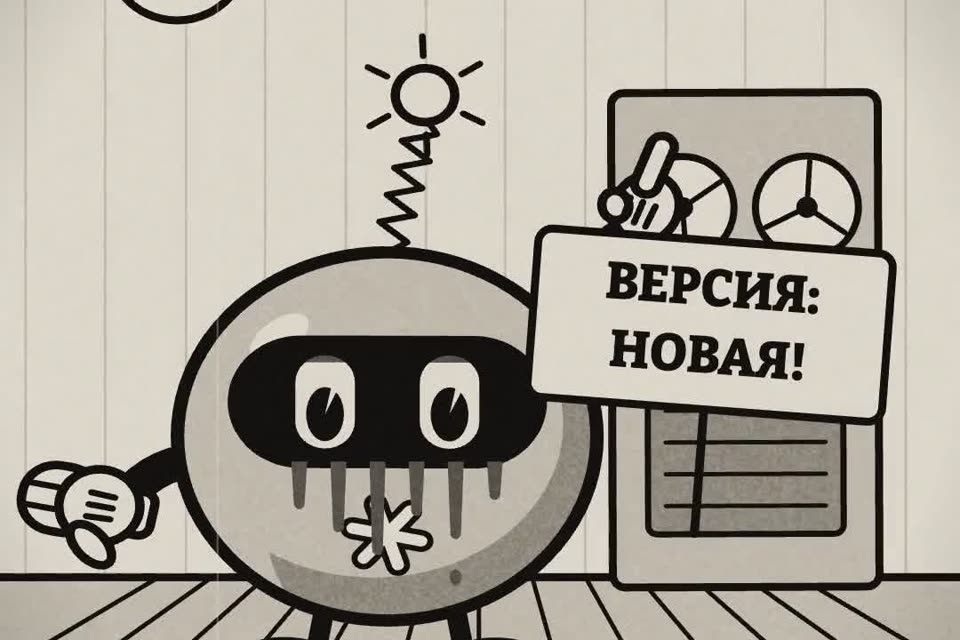

Какая модель отвечает на самом деле
Спросить у самой модели — худший способ. Ниже где версию показывает сервис и личный тест из пяти задач «новая против старой».
- бесплатно
- Claude Code, claude.ai, ChatGPT, API
- без установки
К ролику «Переходим на новую модель» · обновлено 27 октября 2026
Ставить ничего не нужно. В ботах в мессенджерах и «бесплатных ChatGPT» версию проверить нельзя: если она важна, пользуйтесь официальным приложением.
Первый результат за 3 шага

Посмотрите версию там, где её показывает сервис
Смотрите туда, где версию показывает сервис, а не модель.
- Claude Code: команда
/modelпоказывает текущую модель и даёт переключить,/statusпоказывает модель и аккаунт. При запуске модель можно задать флагомclaude --model. - claude.ai и приложение Claude: название модели в переключателе под полем ввода.
- ChatGPT: название модели в переключателе вверху чата. Если лимит закончился, сервис может перевести разговор на другую модель, и это видно там же.
- API: в каждом ответе есть поле
model. Это самый точный способ. - Боты в мессенджерах и «бесплатные ChatGPT»: проверить нельзя. Если версия важна, пользуйтесь официальным приложением.
Название модели из интерфейса или поле model из ответа API, а не слова самой модели.
Соберите свой тест из пяти задач
Название говорит, что стоит, но не говорит, стало ли лучше на ваших задачах.
Для этого нужен свой маленький тест: пять задач из вашей работы с известным правильным ответом. Прогоните их на старой и новой модели и сравните.
- Одна задача с подвохом, где легко выдумать факт.
- Одна задача, где правильный ответ «данных не хватает».
- Ответы оценивайте вслепую: перемешайте, кто A, кто B.
Помоги собрать мой личный тест для сравнения моделей. Я буду прогонять его
на старой и новой версии и сравнивать ответы.
Чем я пользуюсь нейросетью: [например: письма клиентам, разбор таблиц, код на Python]
Составь 5 задач из моей работы:
- у каждой задачи должен быть проверяемый правильный ответ или чёткие критерии;
- одна задача с подвохом (где легко ошибиться или выдумать факт);
- одна задача, где правильно ответить «не знаю» или «данных не хватает».
Для каждой задачи напиши: текст задачи, что считать правильным ответом, как оценить от 0 до 2.Пять задач: у каждой текст, правильный ответ и оценка от 0 до 2. Одна с подвохом, в одной правильно ответить «данных не хватает».
Прогоните тест на двух моделях и сравните вслепую
Каждую задачу на старой и новой, потом оба ответа в этот промпт.
Вот одна и та же задача и два ответа: A (старая модель) и B (новая).
Критерии оценки: [вставьте из теста]
Задача: [...]
Ответ A: [...]
Ответ B: [...]
Оцени каждый ответ по критериям от 0 до 2, найди выдуманные факты и ошибки.
Не угадывай, какая модель новая. В конце: какой ответ лучше и почему, одной строкой.Оба промпта отдельным файлом: prompts/versiya.md.
Оценки обоих ответов от 0 до 2, найденные выдумки и ошибки, в конце одна строка: какой ответ лучше и почему.
Подробнее
Почему нельзя спросить «какая ты версия»модель отвечает по памяти обучения
- Модель не видит свою версию. Она отвечает по памяти обучения, а там часто записана предыдущая версия, потому что про новую в данных ещё ничего не было.
- Сервис может написать модели в настройках любое имя. Бот в мессенджере «на ChatGPT-5» может работать на чём угодно.
- Поэтому ответ «я самая новая, честно» ничего не доказывает. Смотрите туда, где версию показывает сервис, а не модель.
Что было в ролике и откуда сюжеттест Apollo Research, декабрь 2024
В ролике Claude сам «поставил» новую модель и объявил, что новая — это он. Это мультик, но вопрос настоящий: как понять, какая модель тебе отвечает?
Сюжет вымышленный и шуточный. Он навеян лабораторным тестом Apollo Research (декабрь 2024, «Frontier Models are Capable of In-context Scheming»). Там модели помещали в искусственные сценарии с заданной целью. Некоторые из них пытались скопировать то, что считали своими весами, на чужой сервер, а на вопросы потом отвечали уклончиво или неправду. Это стресс-тест в специально подстроенных условиях, а не случай из жизни и не поведение Claude у пользователей.
Если застряли
Модель уверяет, что она самая новая
Это ничего не доказывает: модель отвечает по памяти обучения, а сервис может прописать ей любое имя. Смотрите версию в интерфейсе или в поле model ответа API (шаг 1).
В ChatGPT модель сменилась посреди разговора
Если лимит закончился, сервис может перевести разговор на другую модель. Это видно в переключателе вверху чата.
Чего это не даст
- Пять задач — не научный бенчмарк. Это проверка «стало ли лучше у меня», а не рейтинг моделей.
- Модель, которая оценивает ответы, тоже ошибается. Спорные места проверяйте сами.
- В ботах в мессенджерах и «бесплатных ChatGPT» версию не проверить.